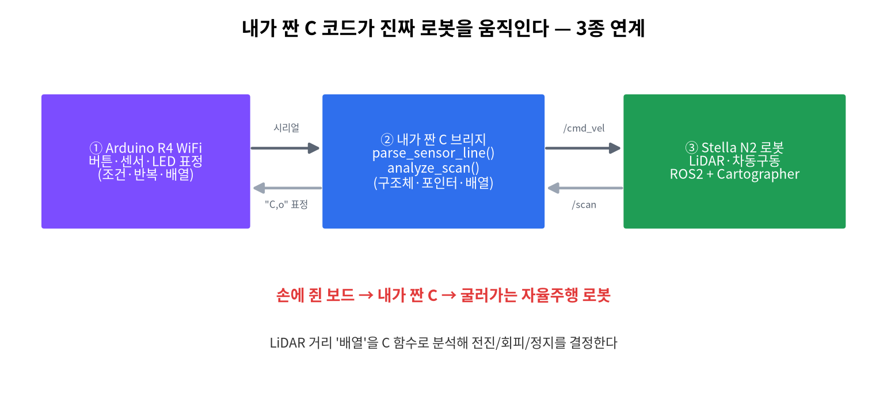
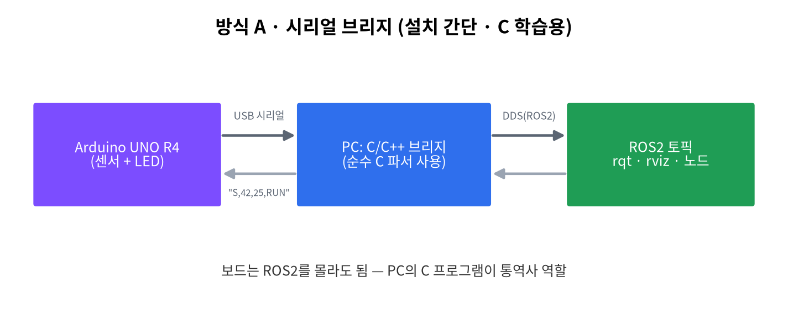
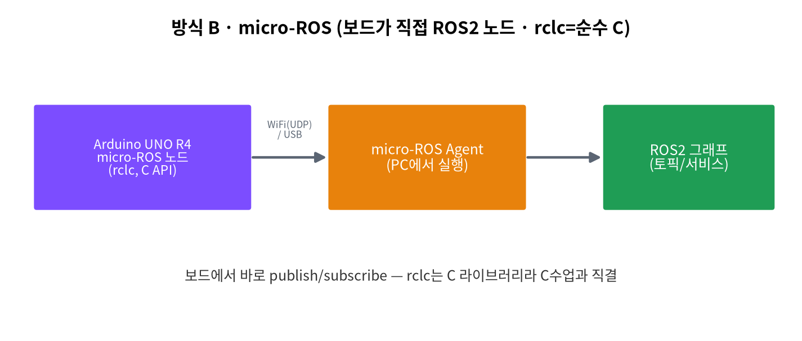

C ↔ ROS2 & Stella N2 로봇 연계¶
"내가 짠 C 함수가 진짜 자율주행 로봇을 움직인다." 손에 쥔 보드(Arduino R4) → 내가 짠 C 다리(bridge) → 진짜 로봇(Stella N2)이 한 줄로 이어진다.

왜 이 조합이 흥미를 폭발시키나?¶
| 단계 | 장비 | 학생 경험 | 배우는 C |
|---|---|---|---|
| ① 보인다 | Arduino R4 WiFi | LED 표정이 바뀐다 | 조건·반복·배열 |
| ② 연결된다 | 내가 짠 C 브리지 | 내 코드가 통역사가 된다 | 구조체·포인터·문자열 |
| ③ 움직인다 | Stella N2 로봇 | 진짜 로봇이 굴러간다 | 배열분석 → 판단 → 제어 |
두 가지 연동 방식¶
보드는 단순 시리얼 송수신, PC의 C/C++ 브리지가 ROS2로 변환. 설치 간단(gcc/colcon), C 학습(파싱·구조체)에 집중.

보드가 직접 ROS2 노드가 된다. rclc = 순수 C API → 수업에서 배운 C가 그대로 등장. (UNO R4 공식 지원, RAM 32KB라 경량 노드)

2026-2 권장 운영
기본 실습은 Ubuntu 24.04 + ROS2 Jazzy + Serial Bridge로 진행한다. micro-ROS는 UNO R4 WiFi 지원이 가능하지만, 보드 라이브러리·Agent·네트워크 설정에 따라 시간이 걸릴 수 있으므로 심화/가산점 경로로 둔다.
Stella N2 로봇 (NTREX / IdeaRobot)¶
| 항목 | 사양 |
|---|---|
| 탑재 컴퓨터 | ODROID-C4 (Ubuntu Mate) |
| ROS | ROS2 Foxy (ROS1 Noetic도 지원) |
| 센서 | YDLIDAR(2D 라이다), IMU |
| 구동 | 12V 차동구동 |
| SLAM/주행 | Cartographer |
표준 ROS2 인터페이스(
/scan,/cmd_vel)를 쓰므로 우리가 만든 C 브리지가 그대로 붙는다. 공식 문서: https://idearobot.gitbook.io/stella-n2
핵심 아이디어 — LiDAR 배열을 C로 분석¶
자율주행의 심장(거리 배열 → 동작 판단)을 1학년이 배운 배열 + 반복문 + 구조체로 구현한다.
// 가장 가까운 장애물을 찾아 전진/회피/정지를 결정 (순수 C)
ScanResult analyze_scan(const float *ranges, int n, float stop_dist) {
// 1) 배열에서 최솟값(가장 가까운 거리) 탐색
// 2) 거리·방향으로 F(전진)/L/R(회피)/S(정지) 결정
}
실제 예제: code/ros2/stella_n2_bridge
| 파일 | 역할 | 연결되는 C 개념 |
|---|---|---|
scan_logic.c |
LiDAR 거리 배열 분석 | 배열, 반복문, 조건문 |
scan_logic.h |
판단 결과 구조체 선언 | struct, enum, 함수 원형 |
stella_n2_bridge.cpp |
ROS2 /scan 구독, /cmd_vel 발행 |
C 함수 호출, 메시지 변환 |
수업용 실행 절차¶
1단계 · C 함수만 먼저 이해¶
scan_logic.c의 핵심은 ranges[] 배열에서 가장 가까운 장애물을 찾는 것이다.
이때 학생이 설명할 수 있어야 하는 질문:
ranges는 왜 포인터처럼 함수에 전달되는가?count가 없으면 배열 길이를 왜 알 수 없는가?- 반환값을
DriveDecision구조체로 묶는 이유는 무엇인가?
2단계 · ROS2 토픽으로 감싸기¶
source /opt/ros/jazzy/setup.bash
mkdir -p ~/cprog_ws/src
cp -r courses-src/c-programming-202602/docs/code/ros2/stella_n2_bridge ~/cprog_ws/src/
cd ~/cprog_ws
colcon build --packages-select stella_n2_bridge
source install/setup.bash
ros2 run stella_n2_bridge stella_n2_bridge
3단계 · 실제 로봇 없이 토픽 테스트¶
ros2 topic pub /scan sensor_msgs/msg/LaserScan "{ranges: [1.2, 0.9, 0.4, 0.8, 1.1], range_min: 0.05, range_max: 8.0}" -r 2
ros2 topic echo /cmd_vel
4단계 · Stella N2 연결 전 안전 확인¶
/cmd_vel값이 예상대로 나오는지 먼저 확인한다.- 바퀴를 띄운 상태에서 실행한다.
stop_distance_m파라미터를 크게 시작한다.- 처음 속도는
0.12 m/s이하로 제한한다.
캡스톤 아이디어 (난이도↑)¶
| 난이도 | 프로젝트 |
|---|---|
| 기본 | LED 신호등 대시보드 (로봇 상태 표시) |
| 중급 | 장애물 회피 주행 / 아두이노 수동 텔레옵 |
| 심화 | 추종 주행 / micro-ROS 직결 |
안전 최우선
처음엔 로봇 바퀴를 바닥에서 띄워 받침대 위에서 시험한다. 속도는 작게, 정지거리(stop_dist)는 크게 시작.
공식 문서 출발점¶
후속 교과(센서처리와 모터제어, 이동로봇과 ROS)의 예고편이다.